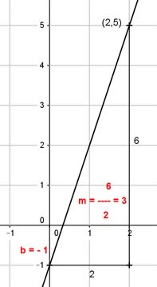

Lineare Funktionen Aufgabe 25 Ermitteln Sie die Gleichung der Geraden, wenn gegeben ist: P(2|5); b = -1 Gesucht ist eine Funktionsgleichung der Form y = mx + b mit der Steigung m und dem Abschnitt b auf der y-Achse. 5 = 2 * m - 1 +1 6 = 2m |:2 m = 3 y = 3x - 1 